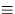

Next: About this document ...
Up: SLALIB Positional Astronomy Library
Previous: Numerical Methods
The basic trigonometrical and numerical facilities are supplied in both single
and double precision versions.
Most of the more esoteric position and time routines use double precision
arguments only, even in cases where single precision would normally be adequate
in practice.
Certain routines with modest accuracy objectives are supplied in
single precision versions only.
In the calling sequences which follow, no attempt has been made
to distinguish between single and double precision argument names,
and frequently the same name is used on different occasions to
mean different things.
However, none of the routines uses a mixture of single and
double precision arguments; each routine is either wholly
single precision or wholly double precision.
In the classified list, below,
subroutine subprograms are those whose names and argument lists
are preceded by `CALL', whereas function subprograms are
those beginning `R=' (when the result is REAL) or `D=' (when
the result is DOUBLE PRECISION).
The list is, of course, merely for quick reference; inexperienced
users must refer to the detailed specifications given later.
In particular, don't guess whether arguments are single or
double precision; the result could be a program that happens to
works on one sort of machine but not on another.
String Decoding
- CALL sla_INTIN (STRING, NSTRT, IRESLT, JFLAG)
Convert free-format string into integer
- CALL sla_FLOTIN (STRING, NSTRT, RESLT, JFLAG)
CALL sla_DFLTIN (STRING, NSTRT, DRESLT, JFLAG)
Convert free-format string into floating-point number
- CALL sla_AFIN (STRING, NSTRT, RESLT, JFLAG)
CALL sla_DAFIN (STRING, NSTRT, DRESLT, JFLAG)
Convert free-format string from deg,arcmin,arcsec to radians
Sexagesimal Conversions
- CALL sla_CTF2D (IHOUR, IMIN, SEC, DAYS, J)
CALL sla_DTF2D (IHOUR, IMIN, SEC, DAYS, J)
Hours, minutes, seconds to days
- CALL sla_CD2TF (NDP, DAYS, SIGN, IHMSF)
CALL sla_DD2TF (NDP, DAYS, SIGN, IHMSF)
Days to hours, minutes, seconds
- CALL sla_CTF2R (IHOUR, IMIN, SEC, RAD, J)
CALL sla_DTF2R (IHOUR, IMIN, SEC, RAD, J)
Hours, minutes, seconds to radians
- CALL sla_CR2TF (NDP, ANGLE, SIGN, IHMSF)
CALL sla_DR2TF (NDP, ANGLE, SIGN, IHMSF)
Radians to hours, minutes, seconds
- CALL sla_CAF2R (IDEG, IAMIN, ASEC, RAD, J)
CALL sla_DAF2R (IDEG, IAMIN, ASEC, RAD, J)
Degrees, arcminutes, arcseconds to radians
- CALL sla_CR2AF (NDP, ANGLE, SIGN, IDMSF)
CALL sla_DR2AF (NDP, ANGLE, SIGN, IDMSF)
Radians to degrees, arcminutes, arcseconds
Angles, Vectors and Rotation Matrices
- R = sla_RANGE (ANGLE)
D = sla_DRANGE (ANGLE)
Normalize angle into range 
- R = sla_RANORM (ANGLE)
D = sla_DRANRM (ANGLE)
Normalize angle into range 
- CALL sla_CS2C (A, B, V)
CALL sla_DCS2C (A, B, V)
Spherical coordinates to ![$[\,x,y,z\,]$](img50.gif)
- CALL sla_CC2S (V, A, B)
CALL sla_DCC2S (V, A, B)
to spherical coordinates
- R = sla_VDV (VA, VB)
D = sla_DVDV (VA, VB)
Scalar product of two 3-vectors
- CALL sla_VXV (VA, VB, VC)
CALL sla_DVXV (VA, VB, VC)
Vector product of two 3-vectors
- CALL sla_VN (V, UV, VM)
CALL sla_DVN (V, UV, VM)
Normalize a 3-vector also giving the modulus
- R = sla_SEP (A1, B1, A2, B2)
D = sla_DSEP (A1, B1, A2, B2)
Angle between two points on a sphere
- R = sla_BEAR (A1, B1, A2, B2)
D = sla_DBEAR (A1, B1, A2, B2)
Direction of one point on a sphere seen from another
- R = sla_PAV (V1, V2)
D = sla_DPAV (V1, V2)
Position-angle of one with respect to another
- CALL sla_EULER (ORDER, PHI, THETA, PSI, RMAT)
CALL sla_DEULER (ORDER, PHI, THETA, PSI, RMAT)
Form rotation matrix from three Euler angles
- CALL sla_AV2M (AXVEC, RMAT)
CALL sla_DAV2M (AXVEC, RMAT)
Form rotation matrix from axial vector
- CALL sla_M2AV (RMAT, AXVEC)
CALL sla_DM2AV (RMAT, AXVEC)
Determine axial vector from rotation matrix
- CALL sla_MXV (RM, VA, VB)
CALL sla_DMXV (DM, VA, VB)
Rotate vector forwards
- CALL sla_IMXV (RM, VA, VB)
CALL sla_DIMXV (DM, VA, VB)
Rotate vector backwards
- CALL sla_MXM (A, B, C)
CALL sla_DMXM (A, B, C)
Product of two 3x3 matrices
- CALL sla_CS2C6 (A, B, R, AD, BD, RD, V)
CALL sla_DS2C6 (A, B, R, AD, BD, RD, V)
Conversion of position and velocity in spherical
coordinates to Cartesian coordinates
- CALL sla_CC62S (V, A, B, R, AD, BD, RD)
CALL sla_DC62S (V, A, B, R, AD, BD, RD)
Conversion of position and velocity in Cartesian
coordinates to spherical coordinates
Calendars
- CALL sla_CLDJ (IY, IM, ID, DJM, J)
Gregorian Calendar to Modified Julian Date
- CALL sla_CALDJ (IY, IM, ID, DJM, J)
Gregorian Calendar to Modified Julian Date,
permitting century default
- CALL sla_DJCAL (NDP, DJM, IYMDF, J)
Modified Julian Date to Gregorian Calendar,
in a form convenient for formatted output
- CALL sla_DJCL (DJM, IY, IM, ID, FD, J)
Modified Julian Date to Gregorian Year, Month, Day, Fraction
- CALL sla_CALYD (IY, IM, ID, NY, ND, J)
Calendar to year and day in year, permitting century default
- CALL sla_CLYD (IY, IM, ID, NY, ND, J)
Calendar to year and day in year
- D = sla_EPB (DATE)
Modified Julian Date to Besselian Epoch
- D = sla_EPB2D (EPB)
Besselian Epoch to Modified Julian Date
- D = sla_EPJ (DATE)
Modified Julian Date to Julian Epoch
- D = sla_EPJ2D (EPJ)
Julian Epoch to Modified Julian Date
Timescales
- D = sla_GMST (UT1)
Conversion from Universal Time to sidereal time
- D = sla_GMSTA (DATE, UT1)
Conversion from Universal Time to sidereal time, rounding errors minimized
- D = sla_EQEQX (DATE)
Equation of the equinoxes
- D = sla_DAT (DJU)
Offset of Atomic Time from Coordinated Universal Time: TAI-UTC
- D = sla_DT (EPOCH)
Approximate offset between dynamical time and universal time
- D = sla_DTT (DJU)
Offset of Terrestrial Time from Coordinated Universal Time: TT-UTC
- D = sla_RCC (TDB, UT1, WL, U, V)
Relativistic clock correction: TDB-TT
Precession and Nutation
- CALL sla_NUT (DATE, RMATN)
Nutation matrix
- CALL sla_NUTC (DATE, DPSI, DEPS, EPS0)
Longitude and obliquity components of nutation, and
mean obliquity
- CALL sla_PREC (EP0, EP1, RMATP)
Precession matrix (IAU)
- CALL sla_PRECL (EP0, EP1, RMATP)
Precession matrix (suitable for long periods)
- CALL sla_PRENUT (EPOCH, DATE, RMATPN)
Combined precession/nutation matrix
- CALL sla_PREBN (BEP0, BEP1, RMATP)
Precession matrix, old system
- CALL sla_PRECES (SYSTEM, EP0, EP1, RA, DC)
Precession, in either the old or the new system
Proper Motion
- CALL sla_PM (R0, D0, PR, PD, PX, RV, EP0, EP1, R1, D1)
Adjust for proper motion
FK4/FK5/Hipparcos Conversions
- CALL sla_FK425 (
R1950, D1950, DR1950, DD1950, P1950, V1950,
R2000, D2000, DR2000, DD2000, P2000, V2000)
Convert B1950.0 FK4 star data to J2000.0 FK5
- CALL sla_FK45Z (R1950, D1950, EPOCH, R2000, D2000)
Convert B1950.0 FK4 position to J2000.0 FK5 assuming zero
FK5 proper motion and no parallax
- CALL sla_FK524 (
R2000, D2000, DR2000, DD2000, P2000, V2000,
R1950, D1950, DR1950, DD1950, P1950, V1950)
Convert J2000.0 FK5 star data to B1950.0 FK4
- CALL sla_FK54Z (R2000, D2000, BEPOCH,
R1950, D1950, DR1950, DD1950)
Convert J2000.0 FK5 position to B1950.0 FK4 assuming zero
FK5 proper motion and no parallax
- CALL sla_FK52H (R5, D5, DR5, DD5, RH, DH, DRH, DDH)
Convert J2000.0 FK5 star data to Hipparcos
- CALL sla_FK5HZ (R5, D5, EPOCH, RH, DH )
Convert J2000.0 FK5 position to Hipparcos assuming zero Hipparcos
proper motion
- CALL sla_H2FK5 (RH, DH, DRH, DDH, R5, D5, DR5, DD5)
Convert Hipparcos star data to J2000.0 FK5
- CALL sla_HFK5Z (RH, DH, EPOCH, R5, D5, DR5, DD5)
Convert Hipparcos position to J2000.0 FK5 assuming zero Hipparcos
proper motion
- CALL sla_DBJIN (STRING, NSTRT, DRESLT, J1, J2)
Like sla_DFLTIN but with extensions to accept leading `B' and `J'
- CALL sla_KBJ (JB, E, K, J)
Select epoch prefix `B' or `J'
- D = sla_EPCO (K0, K, E)
Convert an epoch into the appropriate form - `B' or `J'
Elliptic Aberration
- CALL sla_ETRMS (EP, EV)
E-terms
- CALL sla_SUBET (RC, DC, EQ, RM, DM)
Remove the E-terms
- CALL sla_ADDET (RM, DM, EQ, RC, DC)
Add the E-terms
Geographical and Geocentric Coordinates
- CALL sla_OBS (NUMBER, ID, NAME, WLONG, PHI, HEIGHT)
Interrogate list of observatory parameters
- CALL sla_GEOC (P, H, R, Z)
Convert geodetic position to geocentric
- CALL sla_POLMO (ELONGM, PHIM, XP, YP, ELONG, PHI, DAZ)
Polar motion
- CALL sla_PVOBS (P, H, STL, PV)
Position and velocity of observatory
Apparent and Observed Place
- CALL sla_MAP (RM, DM, PR, PD, PX, RV, EQ, DATE, RA, DA)
Mean place to geocentric apparent place
- CALL sla_MAPPA (EQ, DATE, AMPRMS)
Precompute mean to apparent parameters
- CALL sla_MAPQK (RM, DM, PR, PD, PX, RV, AMPRMS, RA, DA)
Mean to apparent using precomputed parameters
- CALL sla_MAPQKZ (RM, DM, AMPRMS, RA, DA)
Mean to apparent using precomputed parameters, for zero proper
motion, parallax and radial velocity
- CALL sla_AMP (RA, DA, DATE, EQ, RM, DM)
Geocentric apparent place to mean place
- CALL sla_AMPQK (RA, DA, AOPRMS, RM, DM)
Apparent to mean using precomputed parameters
- CALL sla_AOP (
RAP, DAP, UTC, DUT, ELONGM, PHIM, HM, XP, YP,
TDK, PMB, RH, WL, TLR, AOB, ZOB, HOB, DOB, ROB)
Apparent place to observed place
- CALL sla_AOPPA (
UTC, DUT, ELONGM, PHIM, HM, XP, YP,
TDK, PMB, RH, WL, TLR, AOPRMS)
Precompute apparent to observed parameters
- CALL sla_AOPPAT (UTC, AOPRMS)
Update sidereal time in apparent to observed parameters
- CALL sla_AOPQK (RAP, DAP, AOPRMS, AOB, ZOB, HOB, DOB, ROB)
Apparent to observed using precomputed parameters
- CALL sla_OAP (
TYPE, OB1, OB2, UTC, DUT, ELONGM, PHIM, HM, XP, YP,
TDK, PMB, RH, WL, TLR, RAP, DAP)
Observed to apparent
- CALL sla_OAPQK (TYPE, OB1, OB2, AOPRMS, RA, DA)
Observed to apparent using precomputed parameters
Azimuth and Elevation
- CALL sla_ALTAZ (
HA, DEC, PHI,
AZ, AZD, AZDD, EL, ELD, ELDD, PA, PAD, PADD)
Positions, velocities etc. for an altazimuth mount
- CALL sla_E2H (HA, DEC, PHI, AZ, EL)
CALL sla_DE2H (HA, DEC, PHI, AZ, EL)
![$[\,h,\delta\,]$](img29.gif) to
to ![$[\,Az,El~]$](img28.gif)
- CALL sla_H2E (AZ, EL, PHI, HA, DEC)
CALL sla_DH2E (AZ, EL, PHI, HA, DEC)
to - CALL sla_PDA2H (P, D, A, H1, J1, H2, J2)
Hour Angle corresponding to a given azimuth
- CALL sla_PDQ2H (P, D, Q, H1, J1, H2, J2)
Hour Angle corresponding to a given parallactic angle
- D = sla_PA (HA, DEC, PHI)
to parallactic angle
- D = sla_ZD (HA, DEC, PHI)
to zenith distance
Refraction and Air Mass
- CALL sla_REFRO (ZOBS, HM, TDK, PMB, RH, WL, PHI, TLR, EPS, REF)
Change in zenith distance due to refraction
- CALL sla_REFCO (HM, TDK, PMB, RH, WL, PHI, TLR, EPS, REFA, REFB)
Constants for simple refraction model (accurate)
- CALL sla_REFCOQ (TDK, PMB, RH, WL, REFA, REFB)
Constants for simple refraction model (fast)
- CALL sla_ATMDSP ( TDK, PMB, RH, WL1, REFA1, REFB1, WL2, REFA2, REFB2 )
Adjust refraction constants for colour
- CALL sla_REFZ (ZU, REFA, REFB, ZR)
Unrefracted to refracted ZD, simple model
- CALL sla_REFV (VU, REFA, REFB, VR)
Unrefracted to refracted vector, simple model
- D = sla_AIRMAS (ZD)
Air mass
Ecliptic Coordinates
- CALL sla_ECMAT (DATE, RMAT)
Equatorial to ecliptic rotation matrix
- CALL sla_EQECL (DR, DD, DATE, DL, DB)
J2000.0 `FK5' to ecliptic coordinates
- CALL sla_ECLEQ (DL, DB, DATE, DR, DD)
Ecliptic coordinates to J2000.0 `FK5'
Galactic Coordinates
- CALL sla_EG50 (DR, DD, DL, DB)
B1950.0 `FK4' to galactic
- CALL sla_GE50 (DL, DB, DR, DD)
Galactic to B1950.0 `FK4'
- CALL sla_EQGAL (DR, DD, DL, DB)
J2000.0 `FK5' to galactic
- CALL sla_GALEQ (DL, DB, DR, DD)
Galactic to J2000.0 `FK5'
Supergalactic Coordinates
- CALL sla_GALSUP (DL, DB, DSL, DSB)
Galactic to supergalactic
- CALL sla_SUPGAL (DSL, DSB, DL, DB)
Supergalactic to galactic
Ephemerides
- CALL sla_DMOON (DATE, PV)
Approximate geocentric position and velocity of the Moon
- CALL sla_EARTH (IY, ID, FD, PV)
Approximate heliocentric position and velocity of the Earth
- CALL sla_EVP (DATE, DEQX, DVB, DPB, DVH, DPH)
Barycentric and heliocentric velocity and position of the Earth
- CALL sla_MOON (IY, ID, FD, PV)
Approximate geocentric position and velocity of the Moon
- CALL sla_PLANET (DATE, NP, PV, JSTAT)
Approximate heliocentric position and velocity of a planet
- CALL sla_RDPLAN (DATE, NP, ELONG, PHI, RA, DEC, DIAM)
Approximate topocentric apparent place of a planet
- CALL sla_PLANEL (
DATE, JFORM, EPOCH, ORBINC, ANODE, PERIH,
AORQ, E, AORL, DM, PV, JSTAT)
Heliocentric position and velocity of a planet, asteroid or
comet, starting from orbital elements
- CALL sla_PLANTE (
DATE, ELONG, PHI, JFORM, EPOCH, ORBINC, ANODE,
PERIH, AORQ, E, AORL, DM, RA, DEC, R, JSTAT)
Topocentric apparent place of a Solar-System object whose
heliocentric orbital elements are known
- CALL sla_PV2EL (
PV, DATE, PMASS, JFORMR, JFORM, EPOCH, ORBINC,
ANODE, PERIH, AORQ, E, AORL, DM, JSTAT)
Orbital elements of a planet from instantaneous position and velocity
- CALL sla_PERTEL (
JFORM, DATE0, DATE1,
EPOCH0, ORBI0, ANODE0, PERIH0, AORQ0, E0, AM0,
EPOCH1, ORBI1, ANODE1, PERIH1, AORQ1, E1, AM1,
JSTAT)
Update elements by applying perturbations
- CALL sla_EL2UE (
DATE, JFORM, EPOCH, ORBINC, ANODE,
PERIH, AORQ, E, AORL, DM,
U, JSTAT)
Transform conventional elements to universal elements
- CALL sla_UE2EL (
U, JFORMR,
JFORM, EPOCH, ORBINC, ANODE, PERIH,
AORQ, E, AORL, DM, JSTAT)
Transform universal elements to conventional elements
- CALL sla_PV2UE (PV, DATE, PMASS, U, JSTAT)
Package a position and velocity for use as universal elements
- CALL sla_UE2PV (DATE, U, PV, JSTAT)
Extract the position and velocity from universal elements
- CALL sla_PERTUE (DATE, U, JSTAT)
Update universal elements by applying perturbations
- R = sla_RVEROT (PHI, RA, DA, ST)
Velocity component due to rotation of the Earth
- CALL sla_ECOR (RM, DM, IY, ID, FD, RV, TL)
Components of velocity and light time due to Earth orbital motion
- R = sla_RVLSRD (R2000, D2000)
Velocity component due to solar motion wrt dynamical LSR
- R = sla_RVLSRK (R2000, D2000)
Velocity component due to solar motion wrt kinematical LSR
- R = sla_RVGALC (R2000, D2000)
Velocity component due to rotation of the Galaxy
- R = sla_RVLG (R2000, D2000)
Velocity component due to rotation and translation of the
Galaxy, relative to the mean motion of the local group
Astrometry
- CALL sla_S2TP (RA, DEC, RAZ, DECZ, XI, ETA, J)
CALL sla_DS2TP (RA, DEC, RAZ, DECZ, XI, ETA, J)
Transform spherical coordinates into tangent plane
- CALL sla_V2TP (V, V0, XI, ETA, J)
CALL sla_DV2TP (V, V0, XI, ETA, J)
Transform into tangent plane coordinates
- CALL sla_DTP2S (XI, ETA, RAZ, DECZ, RA, DEC)
CALL sla_TP2S (XI, ETA, RAZ, DECZ, RA, DEC)
Transform tangent plane coordinates into spherical coordinates
- CALL sla_DTP2V (XI, ETA, V0, V)
CALL sla_TP2V (XI, ETA, V0, V)
Transform tangent plane coordinates into - CALL sla_DTPS2C (XI, ETA, RA, DEC, RAZ1, DECZ1, RAZ2, DECZ2, N)
CALL sla_TPS2C (XI, ETA, RA, DEC, RAZ1, DECZ1, RAZ2, DECZ2, N)
Get plate centre from star ![$[\,\alpha,\delta\,]$](img3.gif) and tangent plane coordinates
and tangent plane coordinates
- CALL sla_DTPV2C (XI, ETA, V, V01, V02, N)
CALL sla_TPV2C (XI, ETA, V, V01, V02, N)
Get plate centre from star and tangent plane coordinates
- CALL sla_PCD (DISCO, X, Y)
Apply pincushion/barrel distortion
- CALL sla_UNPCD (DISCO, X, Y)
Remove pincushion/barrel distortion
- CALL sla_FITXY (ITYPE, NP, XYE, XYM, COEFFS, J)
Fit a linear model to relate two sets of ![$[\,x,y\,]$](img20.gif) coordinates
coordinates
- CALL sla_PXY (NP, XYE, XYM, COEFFS, XYP, XRMS, YRMS, RRMS)
Compute predicted coordinates and residuals
- CALL sla_INVF (FWDS, BKWDS, J)
Invert a linear model
- CALL sla_XY2XY (X1, Y1, COEFFS, X2, Y2)
Transform one - CALL sla_DCMPF (COEFFS, XZ, YZ, XS, YS, PERP, ORIENT)
Decompose a linear fit into scales etc.
Numerical Methods
- CALL sla_COMBN (NSEL, NCAND, LIST, J)
Next combination (subset from a specified number of items)
- CALL sla_PERMUT (N, ISTATE, IORDER, J)
Next permutation of a specified number of items
- CALL sla_SMAT (N, A, Y, D, JF, IW)
CALL sla_DMAT (N, A, Y, D, JF, IW)
Matrix inversion and solution of simultaneous equations
- CALL sla_SVD (M, N, MP, NP, A, W, V, WORK, JSTAT)
Singular value decomposition of a matrix
- CALL sla_SVDSOL (M, N, MP, NP, B, U, W, V, WORK, X)
Solution from given vector plus SVD
- CALL sla_SVDCOV (N, NP, NC, W, V, WORK, CVM)
Covariance matrix from SVD
- R = sla_RANDOM (SEED)
Generate pseudo-random real number in the range 
- R = sla_GRESID (S)
Generate pseudo-random normal deviate ( `Gaussian residual')
Real-time
- CALL sla_WAIT (DELAY)
Interval wait
Next: About this document ...
Up: SLALIB Positional Astronomy Library
Previous: Numerical Methods
SLALIB --- Positional Astronomy Library
Starlink User Note 67
P. T. Wallace
12 October 1999
E-mail:ptw@star.rl.ac.uk